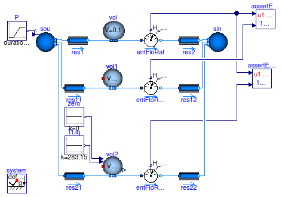
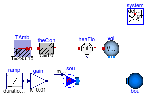
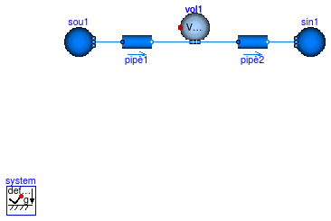
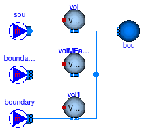
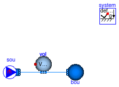
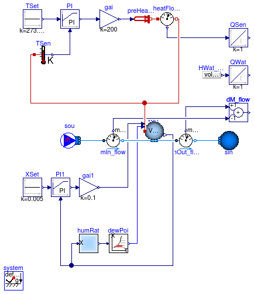
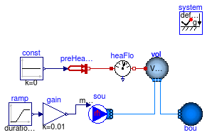
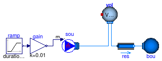

Collection of models that illustrate model use and test models
Information
This package contains examples for the use of models that can be found in
Buildings.Fluid.MixingVolumes.
Extends from Modelica.Icons.ExamplesPackage (Icon for packages containing runnable examples).
Package Content

Information
This model tests the implementation of the mixing volumes.
It compares the results from the mixing volume of the Modelica
Standard Library with the implementation in the Buildings
library. If the changes are bigger than a prescribed limit,
the simulation stops with an error.
Extends from Modelica.Icons.Example (Icon for runnable examples).
Modelica definition
model MixingVolume
extends Modelica.Icons.Example;
package Medium =
Buildings.Media.Air;
Modelica.Blocks.Sources.Ramp P(
duration=0.5,
startTime=0.5,
height=-10,
offset=101330);
Buildings.Fluid.Sources.Boundary_pT sou(
redeclare package Medium
= Medium, T=293.15,
use_p_in=true,
nPorts=3);
Buildings.Fluid.Sources.Boundary_pT sin(
redeclare package Medium
= Medium,
nPorts=3,
use_p_in=false,
p=101325,
T=283.15);
Buildings.Fluid.FixedResistances.FixedResistanceDpM res1(
redeclare each package Medium = Medium,
from_dp=true,
m_flow_nominal=2,
dp_nominal=2.5);
MixingVolumes.MixingVolume vol1(
redeclare package Medium = Medium,
V=0.1,
nPorts=2,
energyDynamics=Modelica.Fluid.Types.Dynamics.FixedInitial,
massDynamics=Modelica.Fluid.Types.Dynamics.FixedInitial,
m_flow_nominal=2);
Buildings.Fluid.FixedResistances.FixedResistanceDpM res2(
redeclare each package Medium = Medium,
from_dp=true,
m_flow_nominal=2,
dp_nominal=2.5);
Buildings.Fluid.FixedResistances.FixedResistanceDpM res11(
redeclare each package Medium = Medium,
from_dp=true,
m_flow_nominal=2,
dp_nominal=2.5);
Buildings.Fluid.FixedResistances.FixedResistanceDpM res12(
redeclare each package Medium = Medium,
from_dp=true,
m_flow_nominal=2,
dp_nominal=2.5);
Modelica.Fluid.Vessels.ClosedVolume vol(
redeclare package Medium = Medium,
V=0.1,
nPorts=2,
h_start=45300.945,
use_portsData=false,
energyDynamics=Modelica.Fluid.Types.Dynamics.FixedInitial,
massDynamics=Modelica.Fluid.Types.Dynamics.FixedInitial);
Buildings.Utilities.Diagnostics.AssertEquality assertEquality;
Buildings.Fluid.Sensors.EnthalpyFlowRate entFloRat(
redeclare package Medium
= Medium, m_flow_nominal=2)
"Enthalpy flow rate";
Buildings.Fluid.Sensors.EnthalpyFlowRate entFloRat1(
redeclare package Medium
= Medium, m_flow_nominal=2)
"Enthalpy flow rate";
Buildings.Fluid.MixingVolumes.MixingVolumeMoistAir vol2(
redeclare package Medium = Medium,
V=0.1,
nPorts=2,
energyDynamics=Modelica.Fluid.Types.Dynamics.FixedInitial,
massDynamics=Modelica.Fluid.Types.Dynamics.FixedInitial,
m_flow_nominal=2);
Buildings.Fluid.FixedResistances.FixedResistanceDpM res21(
redeclare each package Medium = Medium,
from_dp=true,
m_flow_nominal=2,
dp_nominal=2.5);
Buildings.Fluid.FixedResistances.FixedResistanceDpM res22(
redeclare each package Medium = Medium,
from_dp=true,
m_flow_nominal=2,
dp_nominal=2.5);
Buildings.Utilities.Diagnostics.AssertEquality assertEquality1;
Buildings.Fluid.Sensors.EnthalpyFlowRate entFloRat2(
redeclare package Medium
= Medium, m_flow_nominal=2)
"Enthalpy flow rate";
Modelica.Blocks.Sources.Constant zero(k=0);
Modelica.Blocks.Sources.Constant TLiq(k=283.15);
inner Modelica.Fluid.System system;
equation
connect(P.y, sou.p_in);
connect(res2.port_a, entFloRat.port_b);
connect(entFloRat2.H_flow, assertEquality1.u2);
connect(zero.y, vol2.mWat_flow);
connect(TLiq.y, vol2.TWat);
connect(sou.ports[1], res1.port_a);
connect(sou.ports[2], res11.port_a);
connect(sou.ports[3], res21.port_a);
connect(sin.ports[1], res2.port_b);
connect(sin.ports[2], res12.port_b);
connect(res22.port_b, sin.ports[3]);
connect(res1.port_b, vol.ports[1]);
connect(vol.ports[2], entFloRat.port_a);
connect(res11.port_b, vol1.ports[1]);
connect(vol1.ports[2], entFloRat1.port_a);
connect(res21.port_b, vol2.ports[1]);
connect(vol2.ports[2], entFloRat2.port_a);
connect(entFloRat2.port_b, res22.port_a);
connect(entFloRat1.port_b, res12.port_a);
connect(entFloRat.H_flow, assertEquality.u1);
connect(entFloRat.H_flow, assertEquality1.u1);
connect(entFloRat1.H_flow, assertEquality.u2);
end MixingVolume;
Test model for heat transfer to volume

Information
This model demonstrates the use of the mixing volume with heat conduction to the ambient.
The mixing volume is configured as a steady-state model.
Extends from Modelica.Icons.Example (Icon for runnable examples).
Modelica definition
model MixingVolumeHeatConduction
"Test model for heat transfer to volume"
extends Modelica.Icons.Example;
package Medium =
Buildings.Media.Air;
Modelica.Thermal.HeatTransfer.Components.ThermalConductor theCon(G=10)
"Thermal conductor";
Modelica.Thermal.HeatTransfer.Sensors.HeatFlowSensor heaFlo
"Heat flow sensor";
Buildings.HeatTransfer.Sources.FixedTemperature TAmb(T=293.15)
"Ambient temperature";
Modelica.Fluid.Sources.MassFlowSource_T sou(
redeclare package Medium = Medium,
use_m_flow_in=true,
T=313.15,
nPorts=1)
"Flow source and sink";
Modelica.Fluid.Sources.FixedBoundary bou(
redeclare package Medium = Medium,
T=303.15,
nPorts=1)
"Boundary condition";
Buildings.Fluid.MixingVolumes.MixingVolume vol(
V=1,
redeclare package Medium = Medium,
m_flow_nominal=0.01,
energyDynamics=Modelica.Fluid.Types.Dynamics.SteadyState,
massDynamics=Modelica.Fluid.Types.Dynamics.SteadyState,
allowFlowReversal=true,
prescribedHeatFlowRate=false,
nPorts=2);
Modelica.Blocks.Sources.Ramp ramp(
duration=1,
offset=1,
height=-2);
Modelica.Blocks.Math.Gain gain(k=0.01);
equation
connect(TAmb.port, theCon.port_a);
connect(heaFlo.port_b, vol.heatPort);
connect(ramp.y, gain.u);
connect(gain.y, sou.m_flow_in);
connect(theCon.port_b, heaFlo.port_a);
connect(sou.ports[1], vol.ports[1]);
connect(vol.ports[2], bou.ports[1]);
end MixingVolumeHeatConduction;
Test model for mixing volume initialization

Information
This model tests the initialization of the mixing volume.
Extends from Modelica.Icons.Example (Icon for runnable examples).
Modelica definition
model MixingVolumeInitialization
"Test model for mixing volume initialization"
extends Modelica.Icons.Example;
package Medium =
Buildings.Media.Air;
Buildings.Fluid.Sources.Boundary_pT sou1(
redeclare package Medium =
Medium,
p=101330,
nPorts=1,
T=293.15);
Buildings.Fluid.Sources.Boundary_pT sin1(
redeclare package Medium =
Medium,
p=101320,
nPorts=1,
T=293.15);
Modelica.Fluid.Pipes.StaticPipe pipe1(
redeclare package Medium = Medium,
length=1,
diameter=0.25,
flowModel(m_flow_nominal=2));
Modelica.Fluid.Pipes.StaticPipe pipe2(
redeclare package Medium = Medium,
length=1,
diameter=0.25,
flowModel(m_flow_nominal=2));
MixingVolumes.MixingVolume vol1(
redeclare package Medium = Medium,
V=0.1,
nPorts=2,
m_flow_nominal=2,
energyDynamics=Modelica.Fluid.Types.Dynamics.FixedInitial);
inner Modelica.Fluid.System system;
equation
connect(sou1.ports[1], pipe1.port_a);
connect(pipe1.port_b, vol1.ports[1]);
connect(vol1.ports[2], pipe2.port_a);
connect(pipe2.port_b, sin1.ports[1]);
end MixingVolumeInitialization;
A check for verifying the implementation of the parameter mSenFac

Information
This model contains two verifications for the implementation of mSenFac:
-
The mixingVolume temperature
vol.T should be constant.
This is to check the correct implementation of the parameter mSenFac for moist air media.
-
The temperature response of
volMFactor.T and vol1.T should be nearly identical.
Furthermore the response of the species concentration Xi demonstrates the
difference between using an mSenFac = 10 and multiplying volume by 10.
See
Buildings.Fluid.MixingVolumes.Examples.MixingVolumeMassFlow
for the rational of the selected initial conditions for the volumes.
Extends from Buildings.Fluid.MixingVolumes.Examples.MixingVolumeMassFlow (Test model for mass flow into and out of volume).
Parameters
| Type | Name | Default | Description |
|---|
| Pressure | dp_nominal | 10 | Nominal pressure drop [Pa] |
| MassFlowRate | m_flow_nominal | 0.5 | Nominal mass flow rate [kg/s] |
Modelica definition
model MixingVolumeMFactor
"A check for verifying the implementation of the parameter mSenFac"
extends Buildings.Fluid.MixingVolumes.Examples.MixingVolumeMassFlow(
sou(X={0.02,0.98},
T=Medium.T_default),
vol(mSenFac=10),
bou(nPorts=3));
Buildings.Fluid.MixingVolumes.MixingVolume volMFactor(
redeclare package Medium = Medium,
mSenFac=10,
V=1,
nPorts=2,
m_flow_nominal=m_flow_nominal,
energyDynamics=Modelica.Fluid.Types.Dynamics.FixedInitial,
massDynamics=Modelica.Fluid.Types.Dynamics.DynamicFreeInitial)
"Mixing volume using mSenFac = 10";
Buildings.Fluid.MixingVolumes.MixingVolume vol1(
redeclare package Medium = Medium,
V=10,
nPorts=2,
m_flow_nominal=m_flow_nominal,
energyDynamics=Modelica.Fluid.Types.Dynamics.FixedInitial,
massDynamics=Modelica.Fluid.Types.Dynamics.DynamicFreeInitial)
"MixingVolume with V = 10 instead of mSenFac = 10";
Buildings.Fluid.Sources.MassFlowSource_T boundaryMFactor(
redeclare package Medium = Medium,
T=300,
nPorts=1,
m_flow=1,
X={0.02,0.98})
"Flow source for mixing volume using mSenFac";
Buildings.Fluid.Sources.MassFlowSource_T boundary(
redeclare package Medium = Medium,
T=300,
nPorts=1,
m_flow=1,
X={0.02,0.98})
"Flow source for mixing volume using larger volume";
equation
connect(boundaryMFactor.ports[1],volMFactor. ports[1]);
connect(boundary.ports[1], vol1.ports[1]);
connect(bou.ports[2], volMFactor.ports[2]);
connect(bou.ports[3], vol1.ports[2]);
end MixingVolumeMFactor;
Test model for mass flow into and out of volume

Information
This model demonstrates the use of the mixing volume with air flowing into and out of the volume.
The initial conditions for the volume is declared as fixed initial
values for the energy dynamics, but free initial conditions
for the mass dynamics. The reason for leaving the initial conditions
unspecified for the mass dynamics is that the sink bou
declares the pressure of the fluid. As there is no flow resistance
between that boundary condition and the volume,
the volume has the same pressure. Therefore, specifying an
initial condition for the mass dynamics would yield to an overspecified
initial value problem for the pressure of the medium.
Extends from Modelica.Icons.Example (Icon for runnable examples).
Parameters
| Type | Name | Default | Description |
|---|
| Pressure | dp_nominal | 10 | Nominal pressure drop [Pa] |
| MassFlowRate | m_flow_nominal | 0.5 | Nominal mass flow rate [kg/s] |
Modelica definition
model MixingVolumeMassFlow
"Test model for mass flow into and out of volume"
extends Modelica.Icons.Example;
package Medium =
Buildings.Media.Air "Medium model";
parameter Modelica.SIunits.Pressure dp_nominal = 10
"Nominal pressure drop";
parameter Modelica.SIunits.MassFlowRate m_flow_nominal = 0.5
"Nominal mass flow rate";
Modelica.Fluid.Sources.MassFlowSource_T sou(
redeclare package Medium = Medium,
nPorts=1,
use_m_flow_in=false,
m_flow=m_flow_nominal,
T=313.15)
"Flow source and sink";
Sources.Boundary_pT bou(
redeclare package Medium = Medium,
T=303.15,
nPorts=1)
"Boundary condition";
Buildings.Fluid.MixingVolumes.MixingVolume vol(
V=1,
redeclare package Medium = Medium,
nPorts=2,
allowFlowReversal=false,
m_flow_nominal=m_flow_nominal,
energyDynamics=Modelica.Fluid.Types.Dynamics.FixedInitial,
massDynamics=Modelica.Fluid.Types.Dynamics.DynamicFreeInitial);
equation
connect(sou.ports[1], vol.ports[1]);
connect(bou.ports[1], vol.ports[2]);
end MixingVolumeMassFlow;

Information
This model tests
Buildings.Fluid.MixingVolumes.MixingVolumeMoistAir.
After an initial transient, the temperature and humidity of the volume
stabilizes.
Extends from Modelica.Icons.Example (Icon for runnable examples).
Parameters
| Type | Name | Default | Description |
|---|
| MassFlowRate | m_flow_nominal | 0.001 | Nominal mass flow rate [kg/s] |
Modelica definition
model MixingVolumeMoistAir
extends Modelica.Icons.Example;
package Medium =
Buildings.Media.Air;
parameter Modelica.SIunits.MassFlowRate m_flow_nominal = 0.001
"Nominal mass flow rate";
Buildings.Fluid.MixingVolumes.MixingVolumeMoistAir vol1(
redeclare package Medium = Medium,
V=1,
nPorts=2,
energyDynamics=Modelica.Fluid.Types.Dynamics.FixedInitial,
m_flow_nominal=m_flow_nominal)
"Volume";
Modelica.Thermal.HeatTransfer.Sensors.TemperatureSensor TSen
"Temperature sensor";
Modelica.Blocks.Sources.Constant XSet(k=0.005)
"Set point for water mass fraction";
Buildings.HeatTransfer.Sources.PrescribedHeatFlow preHeaFlo;
Modelica.Blocks.Sources.Constant TSet(k=273.15 + 20)
"Set point for temperature";
Buildings.Utilities.Psychrometrics.pW_X humRat( use_p_in=false)
"Conversion from humidity ratio to partial water vapor pressure";
Buildings.Utilities.Psychrometrics.TDewPoi_pW dewPoi
"Dew point temperature";
Modelica.Thermal.HeatTransfer.Sensors.HeatFlowSensor heatFlowSensor;
Modelica.Blocks.Continuous.Integrator QSen
"Sensible heat transfer";
Modelica.Blocks.Continuous.Integrator QLat
"Enthalpy of extracted water";
Modelica.Blocks.Sources.RealExpression QLat_flow(y=vol1.QLat_flow.y)
"MoistAir heat flow rate";
Buildings.Fluid.Sources.MassFlowSource_T sou(
redeclare package Medium = Medium,
nPorts=1,
T=293.15);
Buildings.Fluid.Sources.Boundary_pT sin(
redeclare package Medium =
Medium,
T=293.15,
nPorts=1);
Buildings.Controls.Continuous.LimPID PI(
Ni=0.1,
yMax=1000,
k=1,
Ti=1,
Td=1,
controllerType=Modelica.Blocks.Types.SimpleController.PI,
wd=0,
yMin=-1000);
Buildings.Controls.Continuous.LimPID PI1(
Ni=0.1,
Ti=1,
controllerType=Modelica.Blocks.Types.SimpleController.PI,
k=10,
yMax=1,
yMin=-1,
Td=1);
Buildings.Fluid.Sensors.MassFlowRate mIn_flow(
redeclare package Medium =
Medium);
Buildings.Fluid.Sensors.MassFlowRate mOut_flow(
redeclare package Medium =
Medium);
Modelica.Blocks.Math.Add dM_flow(k2=-1);
Modelica.Blocks.Math.Gain gai(k=200);
Modelica.Blocks.Math.Gain gai1(k=0.1);
Buildings.Fluid.FixedResistances.FixedResistanceDpM res1(
redeclare each package Medium = Medium,
from_dp=true,
dp_nominal=2.5,
m_flow_nominal=m_flow_nominal);
equation
connect(preHeaFlo.port, heatFlowSensor.port_a);
connect(heatFlowSensor.Q_flow, QSen.u);
connect(QLat_flow.y,QLat. u);
connect(TSet.y, PI.u_s);
connect(TSen.T, PI.u_m);
connect(XSet.y, PI1.u_s);
connect(mOut_flow.m_flow, dM_flow.u1);
connect(mIn_flow.m_flow, dM_flow.u2);
connect(gai.y, preHeaFlo.Q_flow);
connect(PI1.y, gai1.u);
connect(gai1.y, vol1.mWat_flow);
connect(dewPoi.T, vol1.TWat);
connect(vol1.X_w, PI1.u_m);
connect(vol1.X_w, humRat.X_w);
connect(sou.ports[1], mIn_flow.port_a);
connect(heatFlowSensor.port_b, vol1.heatPort);
connect(TSen.port, vol1.heatPort);
connect(mIn_flow.port_b, vol1.ports[1]);
connect(mOut_flow.port_a, vol1.ports[2]);
connect(PI.y, gai.u);
connect(humRat.p_w, dewPoi.p_w);
connect(mOut_flow.port_b, res1.port_a);
connect(res1.port_b, sin.ports[1]);
end MixingVolumeMoistAir;
Test model for heat transfer to volume

Information
This model demonstrates the use of the mixing volume with a prescribed heat flow rate.
The mixing volume is configured as a steady-state model.
The heat flow rate is set to a very small value. This model is used to test
convergence for the case the prescribed heat flow rate should be zero,
but due to numerical solutions, it may have a small error that causes the signal to be
non-zero.
Extends from Modelica.Icons.Example (Icon for runnable examples).
Modelica definition
model MixingVolumePrescribedHeatFlowRate
"Test model for heat transfer to volume"
extends Modelica.Icons.Example;
package Medium =
Buildings.Media.Air;
Modelica.Thermal.HeatTransfer.Sensors.HeatFlowSensor heaFlo
"Heat flow sensor";
Modelica.Fluid.Sources.MassFlowSource_T sou(
nPorts=1,
redeclare package Medium = Medium,
use_m_flow_in=true,
T=313.15)
"Flow source and sink";
Modelica.Fluid.Sources.FixedBoundary bou(
redeclare package Medium = Medium,
nPorts=1,
T=303.15)
"Boundary condition";
Buildings.Fluid.MixingVolumes.MixingVolume vol(
V=1,
nPorts=2,
redeclare package Medium = Medium,
m_flow_nominal=0.01,
energyDynamics=Modelica.Fluid.Types.Dynamics.SteadyState,
massDynamics=Modelica.Fluid.Types.Dynamics.SteadyState,
allowFlowReversal=true,
prescribedHeatFlowRate=true);
Modelica.Blocks.Sources.Ramp ramp(
duration=1,
offset=1,
height=-2);
Modelica.Blocks.Math.Gain gain(k=0.01);
Modelica.Blocks.Sources.Constant const(k=0);
Buildings.HeatTransfer.Sources.PrescribedHeatFlow preHeaFlo
"Prescribed heat flow rate";
equation
connect(sou.ports[1], vol.ports[1]);
connect(ramp.y, gain.u);
connect(gain.y, sou.m_flow_in);
connect(vol.ports[2], bou.ports[1]);
connect(preHeaFlo.port, heaFlo.port_a);
connect(preHeaFlo.Q_flow, const.y);
connect(heaFlo.port_b, vol.heatPort);
end MixingVolumePrescribedHeatFlowRate;
Test model for steady state mass dynamics

Information
This model shows that steady state mass dynamics are correctly simulated.
A change in pressure does not lead to an exchange and/or creation of mass.
The mixing volume temperature is also unaffected by a pressure change.
Extends from Modelica.Icons.Example (Icon for runnable examples).
Modelica definition
model MixingVolumeSteadyStateMass
"Test model for steady state mass dynamics"
extends Modelica.Icons.Example;
package Medium =
Buildings.Media.Air;
Sources.MassFlowSource_T sou(
redeclare package Medium = Medium,
use_m_flow_in=true,
nPorts=1)
"Flow source and sink";
Sources.Boundary_pT bou(
redeclare package Medium = Medium,
nPorts=1)
"Boundary condition";
Buildings.Fluid.MixingVolumes.MixingVolume vol(
V=1,
redeclare package Medium = Medium,
m_flow_nominal=0.01,
massDynamics=Modelica.Fluid.Types.Dynamics.SteadyState,
allowFlowReversal=true,
prescribedHeatFlowRate=false,
nPorts=2,
mSenFac=2,
energyDynamics=Modelica.Fluid.Types.Dynamics.FixedInitial)
"Mixing volume with steady state mass dynamics";
Modelica.Blocks.Sources.Ramp ramp(
duration=1,
offset=1,
height=-2)
"Ramp input";
Modelica.Blocks.Math.Gain gain(k=0.01)
"Gain for nominal mass flow rate";
FixedResistances.FixedResistanceDpM res(
redeclare package Medium = Medium,
m_flow_nominal=0.01,
dp_nominal=1000)
"Pressure drop";
equation
connect(ramp.y, gain.u);
connect(gain.y, sou.m_flow_in);
connect(sou.ports[1], vol.ports[1]);
connect(vol.ports[2], res.port_a);
connect(res.port_b, bou.ports[1]);
end MixingVolumeSteadyStateMass;
Automatically generated Mon Jul 13 14:25:42 2015.
 Buildings.Fluid.MixingVolumes.Examples.MixingVolume
Buildings.Fluid.MixingVolumes.Examples.MixingVolume